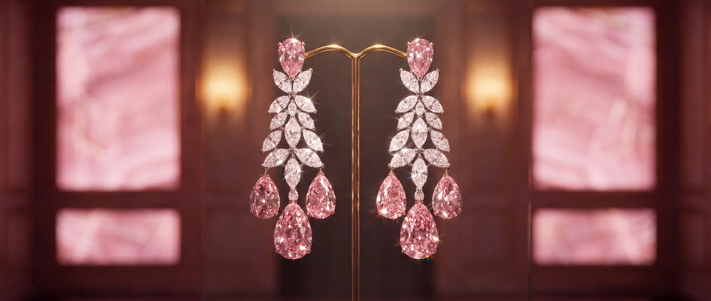

Room IV of VII
Rosa
Pink diamond chandelier earrings
About Rosa
- 2
- fancy intense pinks
- 10.13 ct
- together
- 18.4 ct
- of white diamonds
Two pink diamonds that were never meant to meet: found three years apart, matched by eye on the same afternoon.
Why it is rareThe mine that gave the world most of its pink diamonds closed in 2020. Pinks of this size may never come out of the ground again.
Pink diamonds of this size almost never come out of the ground, and the mine that gave most of them has closed. Each of these two waited in a different vault until the house could find its twin.
The cascades above them are made of white pears and marquises that move independently, so the earrings never stop catching light, even when the wearer is still.
- Metal
- Platinum and rose gold
- Pink diamonds
- Two pear shapes, fancy intense pink, 5.02 and 5.11 carats
- White diamonds
- Pear and marquise cascades, 18.4 carats
- Hours at the bench
- 760
- Room
- IV, the onyx room